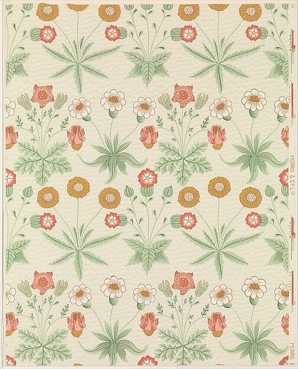

◔
看形式
线条、色彩、构图、材料和光线有哪些可观察的特点？
从哥特式的尖拱，到今天的数码视觉。沿着时间、地域和创作者，认识图像为什么会长成这样。

每种风格都从四个角度阅读。先辨认具体线索，再把它放回产生的时间和地方，最后认识实际使用它的人。
线条、色彩、构图、材料和光线有哪些可观察的特点？
它出现于什么时期？与前后的风格怎样对话？
它从哪里发展，又怎样跨越地域传播和变化？
从人物与作品继续查证，避免只凭一个视觉标签下结论。
用关键词或多选条件，从 72 种风格中找到你要研究的方向。点开卡片可查看历史、真实作品、视觉线索与资料入口。
可以减少一个筛选条件，或换一个关键词。
本图鉴把历史艺术运动、设计流派、地域绘画传统与当代视觉标签分开标示。日期是便于教学的大致范围；一个运动可能在多个地方同时发展，代表人物也不是完整名单。
已配图条目使用真实作品、实物或现场照片，来自博物馆开放获取馆藏与 Wikimedia Commons。详情保留作品名、作者、年代、来源及使用许可；未核实图片的条目保持纯文字。部分较新的图像是风格延续或应用例子，已在详情说明。